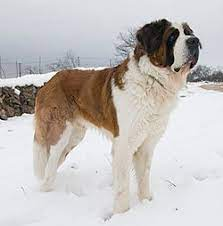

RAZA GRANDE |
|
San Bernardo El San Bernardo es un perro muy cariñoso y al que le gusta dar y recibir amor de los humanos.Es un perro muy tranquilo, pero puede reaccionar frente a las amenazas  |
Pastor Alemán Son muy nobles y leales: y muestran la misma lealtad con todos los miembros de la familia, siendo fieles y protectores con todos ellos. Les encanta jugar: adoran tener juguetes y tener compañeros de juegos, tanto de cachorros como de adultos |